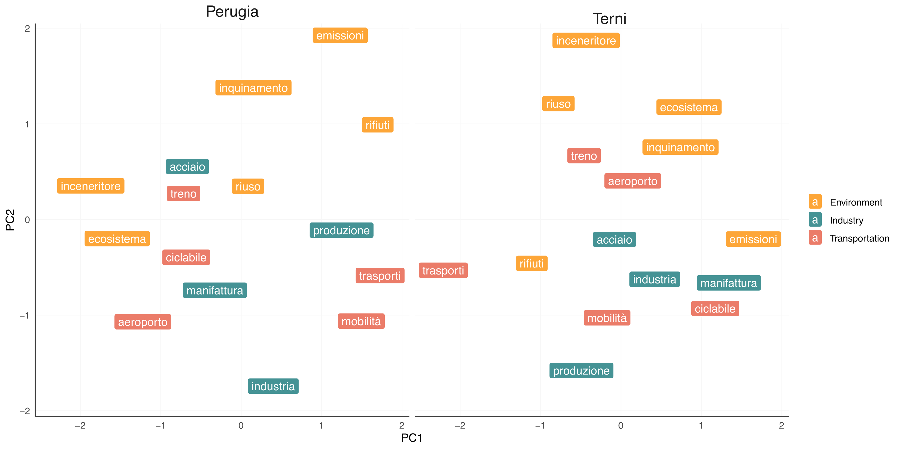

UPTR <- UmbriaPressDet |>
filter(city == 'TR') |>
pluck(3)
UPPG <- UmbriaPressDet |>
filter(city == 'PG') |>
pluck(3)A streamlined workflow for word embeddings
Tutorials
Natural language processing
Word embeddings
When I had to choose the topic and methods for my Master’s thesis, I decided it would be a great idea to use it as an excuse to start experimenting with natural language processing. Focusing on the Umbria region, where I grew up, I decided to embark on the completely new task of scraping and analysing local press articles and YouTube videos using the tools of computational social science. This is the third of a series of blog posts on the process of doing just that in R, from a beginner’s perspective.
In this article, we will be using the corpus I built for my master’s thesis. You can find it on this website (under the name UmbriaPress), as well as an article about how to build your own (the first of this series of blog posts, in the Natural Language Processing category).
Important
I will not be discussing the theory behind word embeddings or how they work in depth. The only contribution of this article is presenting a workflow I found useful, heavily inspired from that proposed in Felix Lennert’s tutorials.
What I assume you already know
You’ll need to already be well versed in R to understand the content of this blog post. If you’re not familiar with R programming, I really recommend the R for Data Science manual. If you want some more step-by-step instructions on how to go about computation al social science stuff, I found Felix Lennert’s tutorials very helpful.
What are we doing?
Word embeddings are a relatively new technique in text retrieval and mining. What they do is basically find a mathematical representation for a word’s meaning. This is very helpful in understanding substantive ideas in a whole corpus, scanning for biases, or building semantic spaces specific to a specific collection of text.
What am I looking for?
In the case of this specific example, I was interested in investigating public discourse around environmental policy. That’s why most of my queries tend to revolve around the same topic, but you can repeat these same steps with whatever questions you’re interested in!
Modeling
In the case of this specific example, we’ll be comparing two different subcorpora of UmbriaPress, split by city:
The wordsalad package makes it extremely easy to then define a word embeddings model capable of digesting the subcorpus (Hvitfeldt 2020). In this example, I used the glove model from Stanford (Pennington, Socher, and Manning 2014). You can change models by simply using another of package’s functions (fasttext, word2vec, etc).
TR_emb <- wordsalad::glove(UPTR)
TR_emb_mat <- as.matrix(TR_emb[, 2:11])
rownames(TR_emb_mat) <- TR_emb$tokens
PG_emb <- wordsalad::glove(UPPG)
PG_emb_mat <- as.matrix(PG_emb[, 2:11])
rownames(PG_emb_mat) <- PG_emb$tokensAnalysis
One of the easiest ways to use the resulting word embedding model is to retrieve all the best matches to a query within a (sub)corpus. The following is an adaptation of Felix Lennert’s example:
TRnorms <- sqrt(rowSums(TR_emb_mat^2)) # calculate length of vectors for normalization
best_match_tr <- function(term, n = 5){
x <- TR_emb_mat[term, ]
cosine <- (TR_emb_mat %*% as.matrix(x)) / (TRnorms * sqrt(sum(x^2))) # calculate cosine similarities between term in question and all the others
best_n <- order(cosine, decreasing = T)[1:n] #extract highest n cosines
tibble(
word = rownames(TR_emb_mat)[best_n],
cosine = cosine[best_n]
)
}
## Function to get best matches, PG ----
PGnorms <- sqrt(rowSums(PG_emb_mat^2)) # calculate length of vectors for normalization
best_match_pg <- function(term, n = 5){
x <- PG_emb_mat[term, ]
cosine <- (PG_emb_mat %*% as.matrix(x)) / (PGnorms * sqrt(sum(x^2))) # calculate cosine similarities between term in question and all the others
best_n <- order(cosine, decreasing = T)[1:n] #extract highest n cosines
tibble(
word = rownames(PG_emb_mat)[best_n],
cosine = cosine[best_n]
)
}Try it out with your corpora! You can basically just copy/paste the code above to try using word embeddings as a retrieval method.
Spatial representation
Performing PCA on a few keywords is a great way to get a sense of how the
### queries ----
Environment <- c('emissioni', 'inquinamento', 'riuso',
'ecosistema', 'rifiuti', 'inceneritore')
Industry <- c('industria', 'acciaio', 'manifattura', 'produzione')
Transportation <- c('treno', 'aeroporto', 'ciclabile', 'mobilità', 'trasporti')
Query <- append(Environment, Industry) |>
append(Transportation)
### models ----
TR_PCA <- prcomp(TR_emb_mat[Query, ]) |>
pluck('x') |>
as.data.frame() |>
rownames_to_column('term') |>
mutate(city = 'Terni',
query = case_when(term %in% Environment ~ 'Environment',
term %in% Industry ~ 'Industry',
term %in% Transportation ~ 'Transportation'))
PG_PCA <- prcomp(PG_emb_mat[Query, ]) |>
pluck('x') |>
as.data.frame() |>
rownames_to_column('term') |>
mutate(city = 'Perugia',
query = case_when(term %in% Environment ~ 'Environment',
term %in% Industry ~ 'Industry',
term %in% Transportation ~ 'Transportation'))
PCA <- TR_PCA |>
bind_rows(PG_PCA)
References
Hvitfeldt, Emil. 2020. “Wordsalad: Provide Tools to Extract and Analyze Word Vectors.” https://doi.org/10.32614/CRAN.package.wordsalad.
Pennington, Jeffrey, Richard Socher, and Christopher D. Manning. 2014. “GloVe: Global Vectors for Word Representation.” In Empirical Methods in Natural Language Processing (EMNLP), 1532–43. http://www.aclweb.org/anthology/D14-1162.